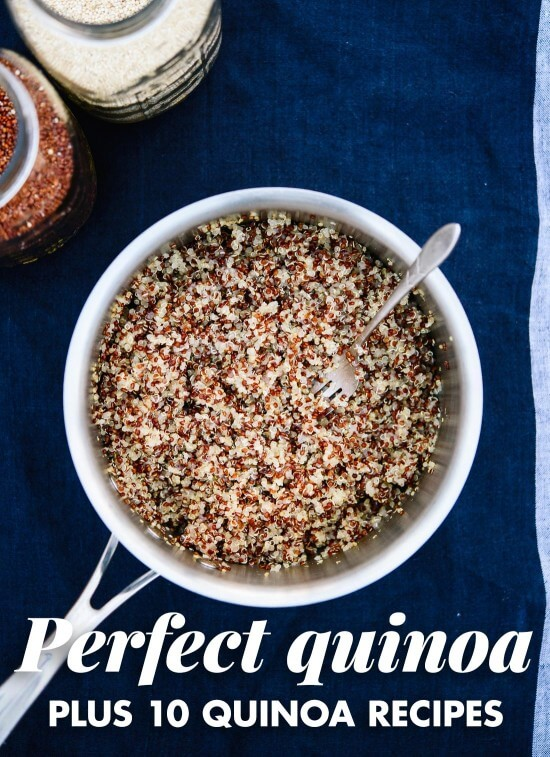

The Perfect Quinoa

Description
Learn how to cook perfect quinoa, every time. I’ve tried all the other quinoa cooking methods and this one works
best. It’s easy to cook fluffy quinoa when you know the right way to do it!
Ingredients
- 1 part uncooked quinoa (e.g. 1 cup quinoa—any color will do—you will end up with three times as much cooked
quinoa)
- 2 parts water (e.g. 2 cups water)
- Salt, to taste (around ¼ teaspoon salt per cup of dry quinoa)
Steps
- Rinse the quinoa: Pour the quinoa into a fine mesh colander and rinse under running water for at least 30
seconds. Drain well. This step removes any bitterness on the outside of the quinoa (caused by naturally
occurring saponins).
- Combine the rinsed quinoa and water in a saucepan. Bring the mixture to a boil over medium-high heat, then
decrease the heat a bit to maintain a gentle simmer. Cook until the quinoa has absorbed all of the water, about
10 to 20 minutes (small amounts of quinoa will be ready closer to 10 minutes; larger amounts between 15 to 20).
Reduce heat as time goes on to maintain a gentle simmer.
- Remove the pot from heat, cover, and let the quinoa steam for 5 minutes. This step gives the quinoa time to pop
open into little curlicues, so it’s nice and fluffy. Remove the lid and fluff the quinoa with a fork. Season
with salt, to taste, unless you’re proceeding with another recipe as written.